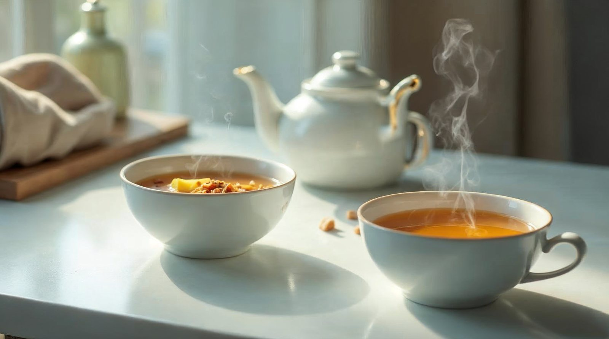
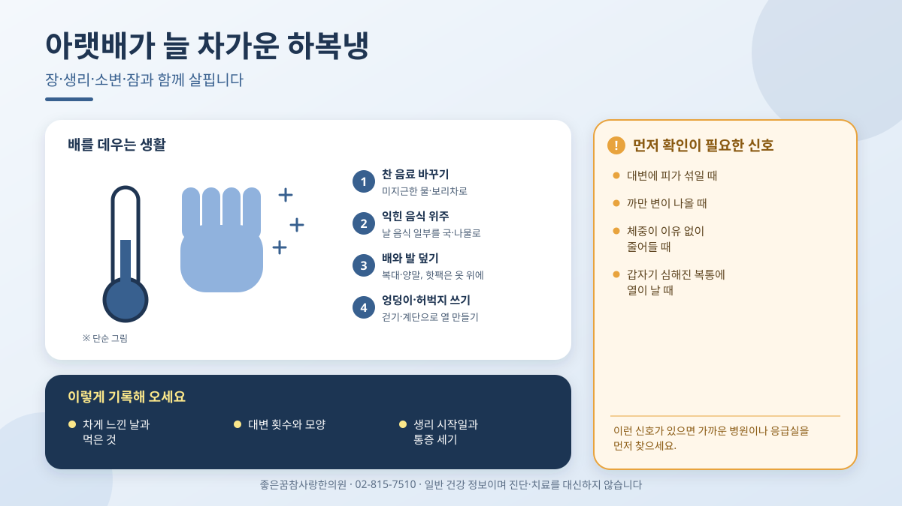

이종호 한의사 감수좋은꿈참사랑한의원 대표원장 (한의사 면허번호 19769)발행 2026-11-26 · 수정 2026-11-26
이 글의 차례
겨울밤 이불 속에 누워 무심코 배에 손을 얹습니다. 손은 따뜻한데 배꼽 아래가 서늘하게 느껴집니다. 핫팩을 대고 있으면 편안하다가도, 떼고 나면 금세 다시 차가워집니다. 찬 우유 한 잔, 아이스커피 한 모금에 배가 살살 아프고 화장실을 찾게 되는 날도 많습니다.
진료실에서 배를 짚어 보다가 "여기가 늘 차요"라는 말씀을 자주 듣습니다. 여성분들이 많지만, 남성분들 가운데에도 아랫배가 차고 아침마다 변이 묽다는 분이 적지 않습니다. 본인은 오래 그래 왔으니 체질이려니 하고 넘기시는 경우가 많습니다.
한의학에서는 이렇게 아랫배가 유난히 찬 상태를 하복냉이라고 부르며 진찰에서 중요하게 봅니다. 병 이름이라기보다, 몸의 따뜻함이 어디에 고르게 퍼지지 못하는지 알려 주는 전통적인 표현입니다. 그래서 배의 온도와 함께 소화, 대변, 소변, 생리, 잠을 같이 여쭙니다.
이 글에서는 아랫배가 왜 차게 느껴지는지, 함께 살펴야 하는 다른 원인은 무엇인지, 일상에서 배를 데우는 방법과 한의원에서 함께 살필 수 있는 부분을 차근차근 정리해 보겠습니다.
하복냉은 어떤 상태인가요
하복냉은 배꼽 아래 아랫배가 손으로 만져도, 스스로 느끼기에도 차가운 상태를 말합니다. 손발이 함께 찬 분도 있고, 손발은 괜찮은데 배만 찬 분도 있습니다. 배만 차고 얼굴로는 열이 오르는 분도 계십니다.
한의학에서는 몸의 따뜻함이 아래로 충분히 내려가지 못하거나, 아랫배를 데우는 힘이 약해진 모습으로 설명해 왔습니다. 이것은 검사로 붙이는 진단명이 아니라, 진찰에서 몸의 흐름을 읽기 위해 써 온 전통적인 묘사입니다. 같은 하복냉이라도 사람마다 이어진 불편이 달라 살피는 방향도 다릅니다.
배가 차다는 느낌은 기분 탓이 아닙니다. 실제로 손을 얹어 보면 윗배와 아랫배의 온도가 다르게 느껴지는 분이 많고, 그 차이가 소화와 대변, 생리의 불편과 함께 움직이는 경우가 흔합니다. 그래서 저는 배의 온도를 몸 상태를 읽는 작은 창으로 여기고, 다른 불편과 함께 엮어서 봅니다.
왜 아랫배가 차가워질까요
첫째는 혈액 순환의 흐름입니다. 오래 앉아 지내면 골반 주변의 혈액 흐름이 느려지고, 아랫배와 다리 쪽으로 따뜻한 피가 덜 머뭅니다. 하루 대부분을 의자에 앉아 보내는 분들이 저녁이면 배와 발이 함께 차다고 하시는 이유입니다.
둘째는 먹고 마시는 습관입니다. 얼음물, 아이스커피, 찬 우유, 날 음식을 자주 드시면 장이 그 온도를 데우느라 애를 씁니다. 장이 예민한 분은 찬 것이 들어가면 바로 꾸르륵거리며 묽은 변으로 반응하고, 그 경험이 쌓이며 아랫배가 늘 서늘하게 느껴집니다.
셋째는 근육과 체력입니다. 몸의 열은 상당 부분 근육에서 만들어집니다. 근육량이 적거나 끼니를 거르고 무리한 다이어트를 하면 열을 만드는 힘이 줄어 배와 손발이 쉽게 차가워집니다.
넷째는 옷차림과 환경입니다. 허리가 드러나는 짧은 상의, 얇은 하의, 바닥이 찬 집, 냉방이 센 사무실은 아랫배를 직접 식힙니다. 긴장과 잠 부족도 손발과 배 쪽 혈관을 조여 차가움을 키웁니다.
함께 살펴야 하는 다른 원인
아랫배가 찬 느낌이 갑자기 생겼거나 다른 변화가 함께 있다면, 생활 습관만 볼 것이 아니라 다른 원인도 확인합니다. 갑상선 기능이 떨어지면 몸 전체가 추위를 많이 타고 붓고 피곤해집니다. 빈혈이 있으면 손발과 배가 차고 쉽게 어지럽습니다.
여성분이라면 생리통이 해마다 심해지거나 생리 양이 크게 늘었는지, 아랫배에 묵직한 덩어리 같은 느낌이 있는지도 여쭙니다. 이런 경우 산부인과에서 초음파 등으로 먼저 확인받으시길 권합니다. 대변에 피가 섞이거나 변의 굵기와 모양이 오래 달라졌다면 소화기내과 검사가 먼저입니다.

함께 오는 불편, 이렇게 나눠 봅니다
장이 예민한 경우
찬 것을 먹으면 배가 아프고 묽은 변을 보며, 아침에 일어나자마자 화장실을 찾는 일이 잦습니다. 배에 손을 대고 있으면 편하고, 따뜻한 국물을 먹으면 속이 가라앉습니다.
생리와 이어진 경우
생리 때 아랫배가 차고 묵직하게 아프며, 핫팩을 대면 덜합니다. 생리 양이 적거나 덩어리가 섞이고, 생리 전후로 손발이 더 차가워진다는 분이 많습니다.
소변과 이어진 경우
몸이 차가워지면 소변이 자주 마렵고, 밤에 소변 때문에 깨는 날이 늘어납니다. 소변 색은 맑고 양이 많은 편입니다. 소변이 따갑거나 탁하다면 염증 확인이 먼저입니다.
기운이 떨어진 경우
쉽게 지치고 목소리에 힘이 없으며, 식사량이 적고 조금만 먹어도 배가 부릅니다. 추위를 많이 타고 잠을 자도 개운하지 않습니다. 몸 전체의 힘을 함께 살펴야 하는 모습입니다.
스스로 점검해 보세요
- 배꼽 아래에 손을 얹으면 윗배보다 서늘한가요?
- 찬 음식이나 음료를 먹으면 배가 아프거나 묽은 변을 보나요?
- 아침에 일어나자마자 화장실을 찾는 날이 많은가요?
- 생리 때 아랫배를 데우면 통증이 덜한가요?
- 추위를 많이 타고 손발도 함께 찬가요?
- 하루 대부분을 앉아서 보내시나요?
- 배에 손을 얹거나 데우면 속이 편해지나요?
여러 개가 해당된다면 배를 데우는 생활을 먼저 시작해 보시길 권합니다. 작은 습관 몇 가지를 꾸준히 이어 가는 것이 한꺼번에 많이 바꾸는 것보다 오래갑니다. 몇 주 이어 가며 대변과 생리, 잠이 어떻게 달라지는지 지켜보는 것이 좋습니다.
먼저 이렇게 여쭙니다
- 아랫배가 찬 느낌은 언제부터, 어떤 계절에 심한가요?
- 대변은 하루 몇 번, 어떤 모양인가요?
- 찬 음식과 음료를 얼마나 자주 드시나요?
- 소변은 하루 몇 번, 밤에 깨서 보시나요?
- 생리 주기와 양, 생리통은 어떠신가요?
- 하루에 앉아 있는 시간과 걷는 시간은 얼마나 되나요?
- 드시는 약이나 받은 검사가 있나요?
일상에서 먼저 해 볼 수 있는 것
가장 먼저 찬 음료를 미지근한 물로 바꿔 보세요. 얼음을 뺀 음료, 상온의 물, 따뜻한 보리차부터 시작하면 됩니다. 아침 첫 잔을 따뜻한 물로 마시는 습관은 장을 부드럽게 깨우는 데도 도움이 됩니다.
식사는 익힌 음식 위주로 바꿔 봅니다. 샐러드와 날 음식이 많다면 데친 나물, 구운 채소, 따뜻한 국으로 일부를 바꾸세요. 생강을 조금 넣은 국이나 차를 곁들이는 분도 많은데, 속쓰림이 있다면 양을 줄여 몸의 반응을 보며 드시면 됩니다.
옷은 허리와 아랫배를 덮는 쪽으로 고릅니다. 상의를 바지 안으로 넣거나 얇은 복대를 두르고, 바닥이 찬 집에서는 실내화와 두툼한 양말을 신어 주세요. 발이 따뜻해지면 아랫배의 서늘함도 함께 줄었다는 분이 많습니다.
핫팩이나 찜질팩으로 배를 데우는 것도 좋습니다. 다만 피부에 바로 오래 대면 저온 화상이 생길 수 있으니 옷 위에 대고, 잠들 때는 떼어 두세요. 따뜻한 물에 발을 담그는 족욕도 배와 다리를 함께 데우는 방법입니다.
몸을 움직이는 것도 중요합니다. 한 시간에 한 번 일어나 걷고, 하루 이삼십 분은 조금 빠르게 걸어 보세요. 엉덩이와 허벅지 근육을 쓰는 스쿼트나 계단 오르기를 조금씩 더하면 몸이 스스로 열을 만드는 힘이 길러집니다.
잠과 긴장도 함께 봅니다. 늦게 자고 긴장한 날이 이어지면 손발과 배 쪽 혈관이 조여 차가움이 커집니다. 잠들기 전 따뜻한 물로 샤워하고, 배에 손을 얹은 채 천천히 숨을 내쉬는 시간을 가져 보세요.
끼니와 다이어트도 함께 봅니다
아침을 거르고 점심은 샐러드, 저녁은 늦게 몰아 먹는 날이 이어지면 몸은 열을 만들 재료가 부족해집니다. 특히 체중을 줄이려고 먹는 양을 갑자기 크게 줄이면 손발과 배가 먼저 차가워지고, 생리 주기가 흔들리기도 합니다.
체중 관리가 필요하더라도 세끼의 틀은 지키고, 단백질과 익힌 채소를 고르게 드시길 권합니다. 아침에 따뜻한 죽이나 달걀, 두부처럼 소화가 편한 음식을 조금이라도 드시면 하루 동안 몸이 덜 움츠러듭니다.
아랫배가 차면 잠도 얕아질까요
배와 발이 차가우면 잠들기까지 시간이 오래 걸린다는 분이 많습니다. 몸은 잠들 무렵 손발로 열을 내보내며 속 온도를 조금 낮추는데, 손발이 이미 차가우면 이 흐름이 매끄럽지 않습니다. 그래서 잠들기 전 발과 배를 데우는 습관이 잠에도 도움이 될 수 있습니다.
새벽에 배가 서늘해 깨거나, 새벽 화장실 때문에 잠이 끊기는 분도 계십니다. 이런 분은 저녁 늦게 찬 음료나 과일을 많이 드시지 않는지, 침실 바닥과 이불이 너무 차지 않은지 함께 살펴봅니다.
어르신과 아이의 배
어르신은 근육이 줄고 움직임이 적어지면서 배와 다리가 함께 차가워지기 쉽습니다. 소화가 더디고 변비와 묽은 변이 번갈아 오기도 합니다. 따뜻한 음식과 가벼운 걷기, 배를 덮는 옷차림이 기본입니다.
아이들은 찬 음료와 아이스크림을 좋아해 배앓이가 잦습니다. 배가 아프다고 할 때 배를 손으로 따뜻하게 문질러 주면 편해지는 아이가 많습니다. 다만 배앓이가 자주 반복되거나 성장이 더디다면 소아청소년과 진료를 먼저 받아 보세요.
계절마다 조심할 것
겨울에는 바깥 추위가 직접 배를 식히고, 여름에는 냉방과 찬 음식이 배를 식힙니다. 오히려 여름에 아랫배가 더 차고 설사가 잦아졌다는 분도 계십니다. 사무실 냉방이 센 곳이라면 얇은 담요를 무릎과 배에 덮어 두세요.
환절기에는 낮과 밤의 기온 차가 커서 저녁에 갑자기 배가 차가워지기 쉽습니다. 얇은 겉옷을 챙기고, 밤에는 배를 덮고 주무시길 권합니다. 이불을 차고 자는 습관이 있다면 배만 덮는 얇은 이불을 따로 두는 것도 방법입니다. 찬 바닥에 오래 앉아 있는 일도 줄이고, 앉을 때는 방석을 깔아 주세요.
배를 부드럽게 문지르는 법
잠들기 전이나 아침에 일어나 누운 채로, 따뜻하게 비빈 손바닥을 배꼽 주변에 얹어 보세요. 시계 방향으로 천천히 원을 그리며 배를 문지르면 장의 흐름을 따라가는 셈이 됩니다. 세게 누르기보다 손의 온기를 전한다는 느낌으로 오 분 정도면 충분합니다.
문지르는 동안 숨을 배 쪽으로 천천히 들이쉬고 길게 내쉬면, 아랫배가 함께 오르내리며 긴장이 풀립니다. 배가 단단하게 뭉친 자리가 있다면 그 자리를 억지로 누르지 말고 주변을 넓게 쓸어 주세요. 식사 직후보다는 한두 시간 지난 뒤가 편합니다.
한의원에서 함께 살필 수 있는 경우
다른 원인을 확인한 뒤 아랫배의 차가움과 함께 생활의 불편이 이어진다면 한의원에서 함께 살필 수 있습니다. 진찰을 마친 뒤 그때의 상태에 맞춰 방법을 고르며, 모든 분께 같은 치료를 드리지는 않습니다.
- 아랫배가 차고 찬 것을 먹으면 배가 아프거나 묽은 변을 보는 경우
- 생리 때 아랫배가 차고 묵직하게 아픈 경우
- 손발과 배가 함께 차고 쉽게 지치는 경우
- 몸이 차가워지면 소변이 잦아지고 밤에 깨는 경우
진찰을 바탕으로 침이나 약침, 필요에 따라 온열 치료를 함께 고려하고, 배를 데우는 생활을 진료실에서 같이 정리합니다. 필요하다고 판단되면 한약을 고려하며, 한약은 지금 드시는 약을 모두 확인한 뒤 신중하게 정합니다.
다른 병원에서 처방받은 약이 있다면 임의로 멈추지 마시고 그대로 이어 가 주세요. 임신 중이시거나 임신을 준비 중이시라면 처음에 먼저 알려 주시고 산부인과 선생님과도 상의해 주세요.
이렇게 기록해 오시면 상담이 쉬워집니다
- 아랫배가 특히 차게 느껴진 날과 그날 먹은 것
- 대변 횟수와 모양
- 밤에 소변으로 깬 횟수
- 생리 시작일과 양, 통증의 세기
- 배를 데운 날과 데우지 않은 날의 차이
기록은 일주일이나 이 주 정도면 충분합니다. 생리가 있는 분이라면 한 주기를 통째로 적어 오시면 주기에 따라 배의 차가움이 어떻게 달라지는지도 함께 볼 수 있습니다.
이런 증상은 먼저 확인이 필요합니다
- 대변에 피가 섞이거나 까만 변이 나오고 체중이 이유 없이 줄어드는 경우
- 아랫배 통증이 갑자기 심해지면서 열이 나거나 배가 딱딱하게 굳는 경우
이런 신호가 있으면 한의원보다 가까운 병원이나 응급실을 먼저 찾으세요.
함께 읽으면 좋은 글
- 찬 음식이나 찬 음료를 먹으면 배가 아플 때는 어떻게 하나요?
- 손발이 찬 수족냉증, 레이노·갑상선·빈혈과 어떻게 구분하나요?
- 생리 때마다 아랫배가 차고 묵직할 때는 무엇을 먼저 살피나요?
- 아침마다 배가 꾸르륵거리고 급하게 화장실을 찾게 되는 설사형 과민성 장은 어떻게 살피나요?
- 한의원 문진에서 몸의 따뜻함, 소화, 잠, 대소변, 통증은 왜 함께 묻나요?

여쭙는 것
- 아랫배가 찬 느낌은 언제부터, 어떤 계절에 심한가요?
- 대변은 하루 몇 번, 어떤 모양인가요?
- 찬 음식과 음료를 얼마나 자주 드시나요?
생활에서 해 볼 것
- 가장 먼저 찬 음료를 미지근한 물로 바꿔 보세요.
- 얼음을 뺀 음료, 상온의 물, 따뜻한 보리차부터 시작하면 됩니다.
- 아침 첫 잔을 따뜻한 물로 마시는 습관은 장을 부드럽게 깨우는 데도 도움이 됩니다.
한의원에서 함께 살필 것
- 아랫배가 차고 찬 것을 먹으면 배가 아프거나 묽은 변을 보는 경우
- 생리 때 아랫배가 차고 묵직하게 아픈 경우
- 손발과 배가 함께 차고 쉽게 지치는 경우
먼저 확인이 필요한 신호
- 대변에 피가 섞이거나 까만 변이 나오고 체중이 이유 없이 줄어드는 경우
- 아랫배 통증이 갑자기 심해지면서 열이 나거나 배가 딱딱하게 굳는 경우
한눈에 보는 표
| 구분 | 핵심 |
|---|---|
| 여쭙는 것 | 아랫배가 찬 느낌은 언제부터, 어떤 계절에 심한가요? 대변은 하루 몇 번, 어떤 모양인가요? |
| 한의원에서 함께 살필 것 | 아랫배가 차고 찬 것을 먹으면 배가 아프거나 묽은 변을 보는 경우 생리 때 아랫배가 차고 묵직하게 아픈 경우 |
| 먼저 확인이 필요한 신호 | 대변에 피가 섞이거나 까만 변이 나오고 체중이 이유 없이 줄어드는 경우 아랫배 통증이 갑자기 심해지면서 열이 나거나 배가 딱딱하게 굳는 경우 |
자주 묻는 질문
아랫배가 찬 것은 체질이라 어쩔 수 없나요?
타고난 경향이 있을 수는 있지만, 먹는 것과 옷차림, 움직임에 따라 꽤 달라집니다. 몇 주 동안 배를 데우는 생활을 이어 가며 몸의 변화를 지켜보시길 권합니다.
핫팩을 매일 대도 괜찮나요?
옷 위에 대고 한 번에 너무 오래 대지 않는다면 괜찮습니다. 피부에 바로 대거나 잠들 때까지 대고 있으면 저온 화상이 생길 수 있어 조심하셔야 합니다.
남자도 하복냉이 있나요?
있습니다. 아랫배가 차고 아침마다 변이 묽거나, 찬 것을 먹으면 배가 아프다는 남성분도 많습니다. 성별과 관계없이 같은 방식으로 살핍니다.
아랫배가 차면 임신이 어렵나요?
아랫배가 찬 것만으로 임신 여부를 말씀드릴 수는 없습니다. 임신을 준비 중이시라면 산부인과에서 필요한 검사를 받으시고, 생활 관리는 함께 살필 수 있습니다.
따뜻한 차는 어떤 것이 좋나요?
보리차나 생강을 조금 넣은 차처럼 따뜻하게 마실 수 있는 것이면 충분합니다. 속쓰림이 있거나 드시는 약이 있다면 양과 종류를 함께 확인해 보세요.
좋은꿈참사랑한의원은 재진 때 지난번 이야기부터 이어서 여쭙니다. 진료시간과 예약은 오시는 길에서 확인하세요.
어디서 상담받을 수 있나요?
좋은꿈참사랑한의원은 서울 동작구 만양로2길 2 신성빌딩 3층·5층(서울 동작구 상도동, 7호선 상도역 3번 출구 근처)에 있습니다. 한의사 3명(이종호 대표원장, 조영기 수석진료원장, 정원영 진료원장)이 진료합니다. 진료시간은 평일 09:30~20:00(점심 13:00~14:00), 토·일·공휴일 09:30~15:00이며, 방문 전 전화로 확인을 권합니다. 예약은 네이버 예약, 카카오톡 상담, 전화 02-815-7510로 받습니다.
이 글은 일반적인 건강 정보이며 개인의 진단이나 치료를 대신하지 않습니다. 증상이 있거나 복용 중인 약이 있다면 진료를 통해 확인하세요. 치료 효과는 개인마다 다를 수 있습니다.
작성 기준: 일반적으로 알려져 있는 건강 정보를 참고해 정리했습니다(대표원장 감수). 증상 기록은 1~2주 동안 하루 1회, 비슷한 시간에 적어 오시면 지난 상태와 비교하기 쉽습니다.